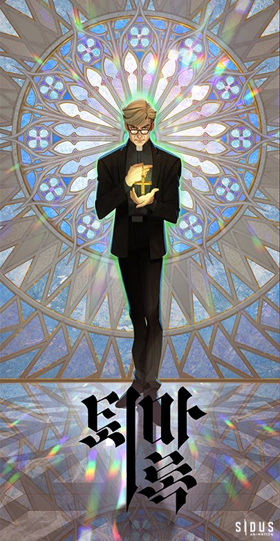
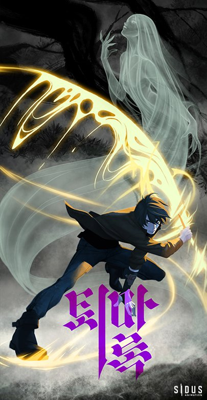
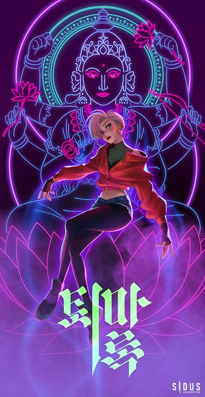
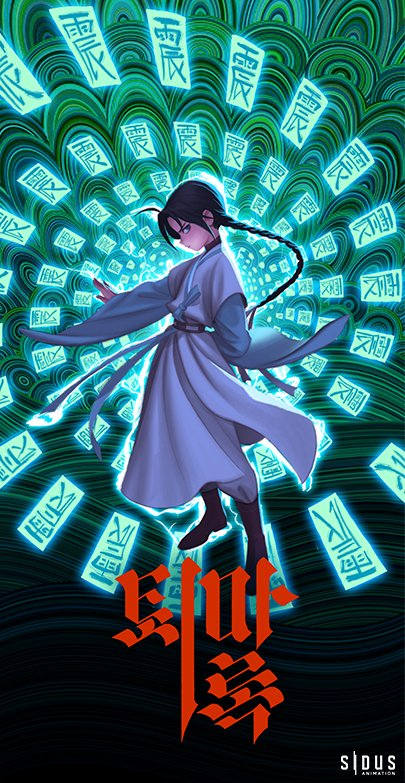

박신부
파문당한 신부. 그리고 흔들리지 않는 수호자
젊어서는 촉망받는 의사였다.
그러나 친구의 어린 딸 미라가 악령에 싸여 고통스러워 하는
모습을 보면서, 의사인 자신이 해결할 수 없는 현상에 큰 충격을
받고 번민에 휩싸이게 된다.
오랜 방황 끝에 가톨릭에 입문, 사제의 길을 걸으려 했지만 교리에
반(反)하는 행위를 했다 하여 파문당하고 만다.
기도력과 오오라가 주특기로서 4인의 퇴마사에게 전투시에는
든든한 수호자이자 전략을 담당하는 좌장으로, 평상시에는
정신적인 지주이자 아버지 같은 역할을 하고 있다.

이현암
따뜻한 마음과 정의로운 칼을 가진 무사
나이는 30대 초반, 겉으로만 보면 평범해 보인다.
한국
고유의 무술에다 내력과 태극기공을 익힌 권법가로 전투시
돌격대와 같다.
공격형이고 물리력에 의존하는 파이터.
성질이
불같이 급하고 불의에 민감한 면이 있지만, 반면에 신중히 단서를
찾아 문제를 해결하는 냉철함도 지니고 있다.
여동생을 알 수
없는 존재에게 잃고 복수를 위해 힘을 얻으려고 하나 무리한
나머지 여러 차례 죽을 고비를 맞이 한다.
그때마다 만난
기인들과 선사들의 도움으로 무예의 정수와 내공을 익힌다.
자신의
분신이나 다름없는 월향을 항상 지니고 다닌다.

현승희
내면에 신을 봉인하고 있는 무한의 능력자
20대 초중반의 나이로 고고학과 미술을 전공했다.
시크한
성격과 아이돌 같은 외모로 남녀 모두에게 인기가 많다.
뛰어난
패션센스로 SNS에서도 큰 영향력을 갖고 있지만 얼굴을 드러내는
건 싫어한다.
강한 염력을 갖고 태어났으며 내면에 인도의
신인 '라쟈'가 봉인되어 있다.
때로는 염력의 힘으로
물리적인 공격을 하고 때로는 퇴마사들의 공력이나 기도력을
올려주기도 하는 등 본인 마음 먹기에 따라 전방위적인 전투력을
발휘한다.
내면에 신이 봉인되어 있어 무한한 에너지와
잠재력을 가지고 있지만 스스로 통제한 적이 없어 어떻게 사용할지
모르는 위험성도 갖고 있다.

장준후
예언에 나오는 운명의 아이
처음 현암과 박신부를 만났을 때는 9살이었다.
갓난 아기때
부터 사찰에서 자라 불교적이고 전통적인 생활방식과 사고방식을
갖고 있다.
댕기머리와 한복을 좋아하며 채식을 한다.
천재의
운명을 타고나서 주술, 도술, 부적술, 한국 무속 등을 어린 나이에
통달했으며 해동 밀교가 오랫동안 쌓아온 모든 정수를
습득했다.
준후를 아는 이들은 능력과 잠재력의 깊이를
가늠하기 어렵다고들 한다.
사람보다 신들과 영들과 어울리며
자랐기에 말투나 생각이 지나치게 어른스럽기도 하지만 문득문득
순수한 어린아이의 모습을 드러내 퇴마사 일행의 사랑을
독차지하는 막내다.